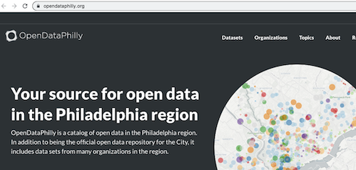
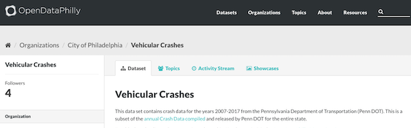

import pandas as pd
import geopandas as gpd
import numpy as np
import camelot
import calendar
import re
import matplotlib.pyplot as pltIntroduction to Python programming for data journalism
COMM3180 Spring 2026
Instructor: Matt O’Donnell (mbod@asc.upenn.edu)
Course Overview
- This notebook uses a dataset from OpenDataPhilly on vehicular crashes to demonstrate the range of analytic techniques and programming skills we will learn in this course.
Why learn programming and data analysis skills for making stories from data?
Testing data in stories,
finding stories in data and
making stories from data
In the era of big data we frequently encounter stories in various forms of media that make assertions and claim to be based on the analysis of large datasets. It is often possible to access and analyze the data of relevance behind these stories. This allows us, for example, to test the claims, the focus and framing of a news article reporting. While there a number of online tools to explore and visualize open datasets, developing programming skills will allow you greater flexibility and the ability to filter, group and combine data in anticipated and unsupported ways.
As more and more data is available it becomes vital for more people to acquire and spread the skills for handling these data beyond just a handful of data storytelling experts and media sources. There has been lots of discussion of open data and data democratization (both within private and public realms) espousing the benefits of making data available to “everyone” beyond its traditional management and analysis by IT departments and statisticians. One element of this is making the data available and easily accessible. But equally (if not more ) important than this is having ability to analytically handle these datasets. While it would be a mistake to suggest that learning programming and data analysis is a trivial or quick thing to do. It is certainly not beyond the reach of motivated individuals and there are many resources available to teach programming languages, such as Python and R. One might even argue that it is the responsibility of modern citizens to become data literate and this should include acquiring some basic data analysis and programming skills.
Having the ability to acquire, analyze and to discover and interpret patterns in data means that more stories can be told beyond the core of those selected by traditional media sources for broad appeal, political, commercial and other reasons.
As students of communication theory we know that effective and persuasive communication is not just about sharing the right (or true) information but also about how you select from, order and present (frame) this information. This becomes all the more crucial as the amount data increases. A fundamental skill for telling stories from data is first being able to identify the stories in data. These might be found by describing and summarizing what is there, identifying trends over time or in making comparisons between different groups, categories and factors, and so on. These stories in data then become the components of the larger story you can tell from the data.
Data journalism or data storytelling requires skills in:
- some programming
- data analysis and visualization
- identifying patterns (stories) in data
- telling stories from these patterns
Example: Analyzing vehicular crash data for Philadelphia 2005-2025
The remainder of this notebook will work through an example of exploring and analyzing an open public dataset using
pandas, the core Python tool we will learn in this class. It works through the key steps:- Acquiring and loading a dataset
- Inspecting and understanding the data
- Looking at metadata and turning data into information
- Exploring the relevant and interesting components of the dataset
- Grouping and associating the data to find patterns and trends
- Communicating these insights in an engaging story.
We will return to and practice these steps again and again in this course.
Here we make use of data made available on www.opendataphilly.org

The particular dataset is derived from the annual crash data compiled by Penn DOT for Pennsylvania.
- https://www.opendataphilly.org/dataset/vehicular-crash-data

- https://www.opendataphilly.org/dataset/vehicular-crash-data
0. Setup notebook
The first Python code in a notebook should include all the modules and functions that you need to use for the analysis. These are grouped together at the top and not scattered throughout the notebook to make it clearer and more reproducible.
For data analysis we are going to use a popular and powerful code library called
pandas(https://pandas.pydata.org/) that provides data structures and functionality optimized for data analysis and particularly for working with data in the form of a table.
1. Load the data
We will look at some of the most common data formats used to store data in files. Here we have downloaded the CSV (comma separated value) format version of the vehicular crash data.
Here is a subset of the data with 7 recorded crashes and a small handful of the features recorded about each crash:
<th>county_name</th> <th>collision_type</th> <th>dec_lat</th> <th>dec_long</th> </tr> </thead> <tbody> <tr> <td>3</td> <td>Philadelphia</td> <td>1</td> <td>40.0446</td> <td>-75.0547</td> </tr> <tr> <td>5</td> <td>Philadelphia</td> <td>4</td> <td>39.9693</td> <td>-75.1432</td> </tr> <tr> <td>7</td> <td>Philadelphia</td> <td>4</td> <td>40.0490</td> <td>-75.0707</td> </tr> <tr> <td>6</td> <td>Philadelphia</td> <td>6</td> <td>39.9034</td> <td>-75.1504</td> </tr> <tr> <td>4</td> <td>Philadelphia</td> <td>1</td> <td>40.0512</td> <td>-74.9892</td> </tr> <tr> <td>6</td> <td>Philadelphia</td> <td>8</td> <td>39.9352</td> <td>-75.1542</td> </tr> <tr> <td>4</td> <td>Philadelphia</td> <td>4</td> <td>40.0811</td> <td>-75.0391</td> </tr> </tbody></table>The CSV format is a simple text format organized with one line for each instance (i.e. a crash) and each feature or data point about the crash (i.e. number of people involved, time of day, kind of injuries, etc.) is separated by a comma. The first line of the file usually contains the names of features.
A CSV representation of the table above is:
day_of_week,county_name,collision_type,dec_lat,dec_long
3,Philadelphia,1,40.0446,-75.0547
5,Philadelphia,4,39.9693,-75.1432
7,Philadelphia,4,40.049,-75.0707
6,Philadelphia,6,39.9034,-75.1504
4,Philadelphia,1,40.0512,-74.9892
6,Philadelphia,8,39.9352,-75.1542
4,Philadelphia,4,40.0811,-75.0391Key point and observations
A fundamental point to take on right at the beginning is that it is here in things a mundane as the data format that we begin to look for the stories in data. It is easy to rush through the steps of acquiring and loading a big data set in order to push it through a data analysis and visualization pipeline or tool, without stopping to think about what each row and column represents.
- Here each row is an incidence of a crash, which for the individuals involved is a major and serious life event and sadly perhaps a life threatening or life ending event. This event is a story located a particular time and place.
- Then the columns represent the potential narrative foci as we begin to group together one, two, ten, 300, thousands of these crash incidents. We can begin to formulate these as questions:
- What times of day do crashes most often occur?
- Are there particularly intersections where a lot of crashes occur?
- When a bicycle is involved are the injuries more serious then two or more cars?
Load the data
We use the
pd.read_csv()function to read the data from the CSV file into a data structure called a data frame.A data frame is a table structure with:
Rows(each line in the CSV file, i.e. a crash)Columns(each of the features recorded in the CSV file about crashes)An index(a unique way of identifying and accessing each of the rows)
crash_data = pd.read_csv('data/PDOT_crash_data_2005_2024.csv', low_memory=False)2. Inspect the data
The first step is always to try to get a sense of the size (dimensions), type and quality of the data.
Key questions include:
How many rows (observations) does it have?
How many columns (different types of features) are there?
How comprehensive and varied are these features across the dataset?
- For example, there may be a column that records whether a deer is involved in the crash. But for Philadelphia city crashes this is likely to most often be 0 or not recorded. And it is therefore probably not the story we are going to tell!
Are there missing values?
A pandas
DataFrameis a Python OBJECT that has:- attributes - sequences of data
- functions - sets of operations or steps that can be applied to these data
(do not worry about this terminology or what it means at the moment!)
- The
.shapeattribute gives the dimensions of theDataFrameand reports the number of rows first, followed by the number of columns.
crash_data.shape(691069, 99)Key point
- So we have almost 700,000 accidents involving vehicles recorded in a 19 year period.
- That is a large number!
- There are stories to be told.
- Don’t forget the human side of what these numbers represent.
- There are 99 columns. So each crash incident had a range of features noted. Understanding what these features are is vital to being able to find the stories in the data.
Doing some visual data inspection
The size of the data necessitates that we approach it computationally and quantitatively, that is, we cannot try and read it row by row! However, it is good practice to do some visual spot checks as a way to familiarize yourself with the data.
Pandas
DataFrames have various functions for this:.head()will display the firstnrows of the data frame (default n=5)..tail()will display the lastnrows of the data (default n=5)..sample(n)will select a random sample ofnrows of the data.
crash_data.head()| day_of_week |
|---|
| CRN | ARRIVAL_TM | AUTOMOBILE_COUNT | BELTED_DEATH_COUNT | BELTED_SUSP_SERIOUS_INJ_COUNT | BICYCLE_COUNT | BICYCLE_DEATH_COUNT | BICYCLE_SUSP_SERIOUS_INJ_COUNT | BUS_COUNT | CHLDPAS_DEATH_COUNT | ... | WORK_ZONE_LOC | WORK_ZONE_TYPE | WZ_CLOSE_DETOUR | WZ_FLAGGER | WZ_LAW_OFFCR_IND | WZ_LN_CLOSURE | WZ_MOVING | WZ_OTHER | WZ_SHLDER_MDN | WZ_WORKERS_INJ_KILLED | |
|---|---|---|---|---|---|---|---|---|---|---|---|---|---|---|---|---|---|---|---|---|---|
| 0 | 2005000003 | NaN | 1 | 0 | 0 | 0 | 0 | 0 | 0 | 0 | ... | NaN | NaN | NaN | NaN | NaN | NaN | NaN | NaN | NaN | NaN |
| 1 | 2005000044 | NaN | 1 | 0 | 0 | 0 | 0 | 0 | 0 | 0 | ... | NaN | NaN | NaN | NaN | NaN | NaN | NaN | NaN | NaN | NaN |
| 2 | 2005000073 | NaN | 2 | 0 | 0 | 0 | 0 | 0 | 0 | 0 | ... | NaN | NaN | NaN | NaN | NaN | NaN | NaN | NaN | NaN | NaN |
| 3 | 2005001018 | NaN | 2 | 0 | 0 | 0 | 0 | 0 | 0 | 0 | ... | NaN | NaN | NaN | NaN | NaN | NaN | NaN | NaN | NaN | NaN |
| 4 | 2005001021 | NaN | 1 | 0 | 0 | 0 | 0 | 0 | 0 | 0 | ... | NaN | NaN | NaN | NaN | NaN | NaN | NaN | NaN | NaN | NaN |
5 rows × 99 columns